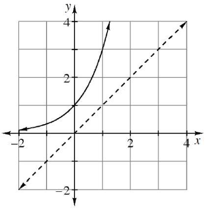
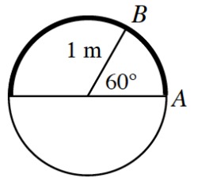

.figure-full image option. Homework Help text omitted. Code comments included for easier editing.Graph each piecewise-defined function given below and determine whether the function is continuous.
\(j ( x ) = \left\{ \begin{array} { l l } { 2 ^ { x } } & { \text { for } x \leq 2 } \\ { - 2 x + 9 } & { \text { for } x > 2 } \end{array} \right.\)
\(h ( x ) = \left\{ \begin{array} { l l } { x ^ { 2 } - 2 } & { \text { for } x \leq - 1 } \\ { x } & { \text { for } x > - 1 } \end{array} \right.\)
Graph each piecewise-defined function given below and determine whether the function is continuous.
\(f ( x ) = \left\{ \begin{array} { l l } { x + 4 } & { \text { for } x < - 2 } \\ { \frac { 1 } { 2 } x ^ { 2 } } & { \text { for } x \geq - 2 } \end{array} \right.\)
\(g ( x ) = \left\{ \begin{array} { l l } { x + 4} & {\text { for } x \geq 3 } \\ { \frac { 1 } { 2 } x ^ { 2 } } & { \text { for } x < 3 } \end{array} \right.\)
Solid Increasing exponential curve, horizontal asymptote at, x axis, passing through the points (0, comma 1), & (1, comma 3). A dashed line passing through the origin & the point (1, comma 1)The graph of an exponential function is sketched below. Sketch the graph of the inverse and state the domain and range for the function and its inverse. The dotted line is \(y=x\).

A line passes through the point \((-3,20)\) and has a slope of \(-6\). Write the equation of this line in point-slope form.
Tiffani has a craft business that is expanding and she plans to cut down on expenses by purchasing craft paints in bulk. Most of them are straight mixtures, except for vibrant green, which she mixes specially. To create the mixture, she mixes one pint of the standard green paint with one teaspoon of red and two teaspoons of yellow. She has one pint of red and two pints of yellow paint that she wishes to add to the green paint to create the special mix. How many gallons of the green paint will she need in order to use all of her red and yellow paint? Below is a list of the equivalent measures.
\(\text{one gallon}=128\ \text{ounces}\)
\(\text{one ounce}=6\ \text{teaspoons}\)
\(\text{one pint}=16\ \text{ounces}\)
\(\text{one pint}=2\ \text{cups}\)
Sketch the graph of \(y=\frac{1}{2}x^3\).
What is the parent equation?
Graph the parent and transformed graphs on the same set of axes.
Describe the transformation.
Rationalizing the denominator can make it easier to recognize “like terms” in expressions.
For example, \(\sqrt { 2 }\) and \(\frac { 1 } { \sqrt { 2 } }\) can be combined if \(\frac { 1 } { \sqrt { 2 } }\) is rewritten as \(\frac { 1 } { \sqrt { 2 } } \cdot \frac { \sqrt { 2 } } { \sqrt { 2 } } = \frac { \sqrt { 2 } } { 2 }\).
Then \(\sqrt{2}+\frac{1}{\sqrt{2}}=\)\(\sqrt{2}+\frac{\sqrt{2}}{2}=\frac{3\sqrt{2}}{2}\).
Use this method to combine the like terms of each radical expression below.
\(8\sqrt { 2 }-\frac{8}{\sqrt{2}}\)
\(-5\sqrt{6}+\frac{4}{\sqrt{6}}\)
Circle with a horizontal diameter, Right end point labeled, A, in top right quarter of the circle, point, labeled B, with radius from center to, B, labeled 1 m, and central angle for Arc, A,B, labeled 60 degrees.The circle at right has a radius of one meter.
How many degrees are in a half circle?
What is the length of the arc that covers half of the circle?
Using exact values, what is the length of \(\overparen {\textit{AB}}\)? You will have \(\pi\) as part of your answer.
